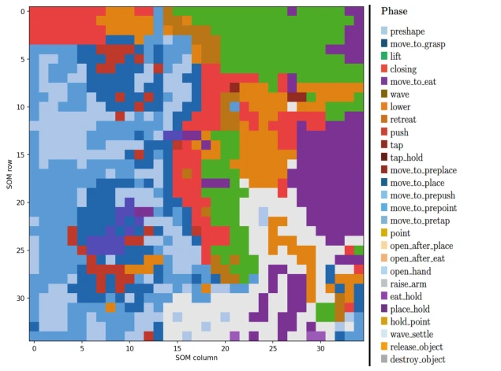
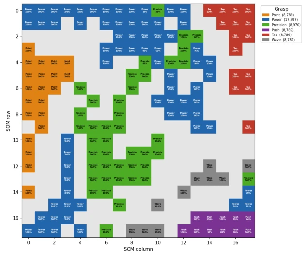
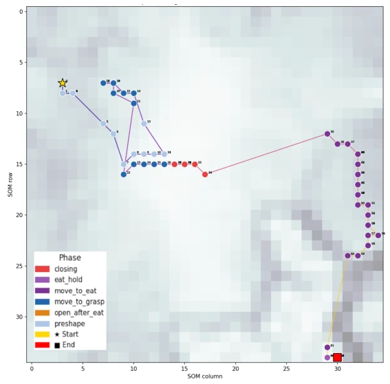
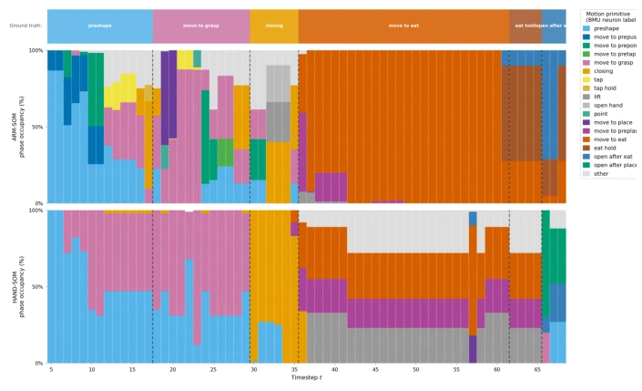

这篇论文给具身智能圈又添了一剂“生物启发”的安慰剂。作者用两个自组织映射（SOM）把机械臂和手的运动拆解成“原语”，再用回声状态网络（ESN）在线识别阶段。说实话，93.9% 的识别率在没有上下文的情况下确实挺能打，证明运动学轨迹本身确实藏了大部分信息。但别急着吹捧“镜像神经元系统”，这本质上就是个特征工程 + 时序分类的套路，所谓的“原语”不过是 SOM 上的聚类点，离真正的认知理解还差着十万八千里。最尴尬的是，全仿真环境，NICO 机器人自己玩自己，没提跨实体迁移，这“生物启发”的帽子戴得有点勉强。不过，把臂和手分开建模确实聪明，毕竟手抓握和臂移动的信息流确实不同，这种解耦设计避免了单一地图的混淆，算是个务实的改进。
This paper adds another dose of "biologically inspired" placebo to the embodied intelligence community. The authors use two self-organizing maps (SOMs) to decompose the motion of the robotic arm and hand into "primitives", and then use an echo state network (ESN) for online stage recognition. To be honest, the 93.9% recognition rate without context is indeed impressive, proving that kinematic trajectories themselves do hide most of the information. But don't rush to praise the "mirror neuron system"; this is essentially a routine of feature engineering + temporal classification, and the so-called "primitives" are just clustering points on the SOM, far from true cognitive understanding. The most awkward part is the fully simulated environment, where the NICO robot plays with itself; cross-entity transfer is not mentioned, making this "biologically inspired" label a bit of a stretch. However, modeling the arm and hand separately is indeed clever, after all, the information flow of hand grasping and arm movement is indeed different; this decoupled design avoids confusion in a single map, counting as a pragmatic improvement.
In human-robot interaction, if a robot cannot interpret human action intentions, it is just a mute [18]. Existing methods mostly rely on end-to-end visual or motion signals, using Transformer or RNN for direct classification [1], but ignore key biological insights: action understanding should be divided into two layers—basic motion primitives and goal-oriented sequences [19]. Although there are already models based on the mirror neuron system (MNS) [10, 17], they often fail to fully utilize the topological mapping characteristics of proprioception. This paper aims to verify: whether learned motion primitive temporal trajectories alone are sufficient to support online stage recognition, or if additional context (such as object distance, contact state) is needed for assistance. This directly challenges the hypothesis of "whether context is necessary", echoing research in MNS that motion and context inputs originate from different neural pathways [17]. Furthermore, targeting proprioception, the sensory modality least understood in cognitive neuroscience, this paper attempts to organize its temporal states using topological mapping, filling the gap in existing MNS models regarding proprioceptive signal processing.
The overall process is divided into three stages: data preprocessing, primitive discovery, and online recognition. First, 4200 action trajectories are collected in the NICO simulation environment; redundant features are removed from 108 original kinematic features through hierarchical clustering, retaining 22 non-redundant features (13 for arm, 9 for hand). Next, two independent SOMs learn the topological representations of arm kinematics (A-SOM) and hand configuration (H-SOM) respectively, mapping continuous motion to discrete best matching unit (BMU) sequences. The innovation lies in the dual-map design, capturing the arm's transport topology and the hand's discrete grasping topology respectively; A-SOM is responsible for spatial-temporal, H-SOM for discrete configuration. Finally, ESN serves as a temporal reader, inputting continuous BMU weight vectors into the reservoir, training the readout layer via ridge regression to achieve online classification of the current motion stage. Inputs are divided into four configurations: no context (BMU only) and with context (action ID, distance, contact), used to evaluate the information completeness of primitive representation. The ESN reservoir size is set to 300 neurons, leak rate 0.5, ensuring temporal memory capability.
Experiments are based on NICO simulation data, containing 7 types of actions and 27 stage labels. The evaluation metric is stage recognition accuracy (PRA). Results show that using only SOM activation trajectories (ctx-no) can achieve 93.9% accuracy; after adding context information such as action, distance, etc., it only improves by 1.0 percentage points (ctx-all reaches
其他图片Other Figures

Fig. 2. A-SOM dominant phase per neuron. Neuron colour indicates the phase whose training samples most frequently activated that neuron. The map exhibits clear topo- graphical organisation (Mean Phase Purity 73.9%).

Fig. 3. H-SOM dominant grasp type per neuron. Neuron colour indicates the dominant grasp synergy with its purity percentage. (Mean Purity 97.2%).

Fig. 4. Single-trial trajectory on A-SOM representing Eat action traces a smooth left- to-right path. Across 68 timesteps, the trajectory visits 46 unique neurons, indicating that the movement progresses through a structured sequence of arm-motion primitives.

Fig. 5. ESN phase recognition timeline for representative Eat trial. Top: ground- truth phase sequence. Middle: phase distribution of the active A-SOM neuron at each timestep. Bottom: phase distribution of the active H-SOM neuron. The complementary coverage of A-SOM and H-SOM is visible: A-SOM achieves near-pure move-to-eat rep- resentation (t = 36–61) while H-SOM provides sharp closing discrimination at t = 30.